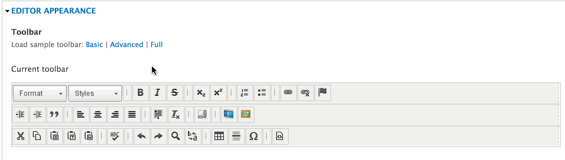
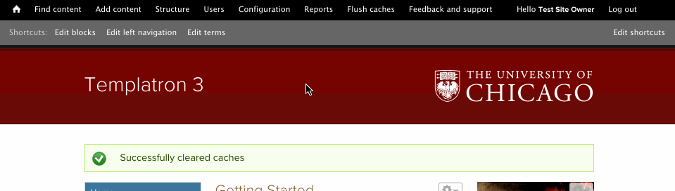

Hosted templating service for departments, divisions, offices, labs, and more at UChicago with over 300 live sites and another 100+ in development.
All this is to say... We have many users of all skills and abilities.
or
or
...so only give them what they need.
... so make sensible input filters, use tokens, etc.
...so make useful inline documentation.
...so give them direct access to answers, and let them ask questions
<span id="wtf">nasty markup</span>......so take advantage of “Paste from Word” or “Paste as plain text”.
...so speak to them in theirs.
...so use roles wisely.
...so empower them to do things like clear caches (when you can).
...so ask them to RTFM, then follow up.
...so maybe don't hate them, not even a little bit, not even at all.
P.S. We're hiring. bit.ly/ITS-FED